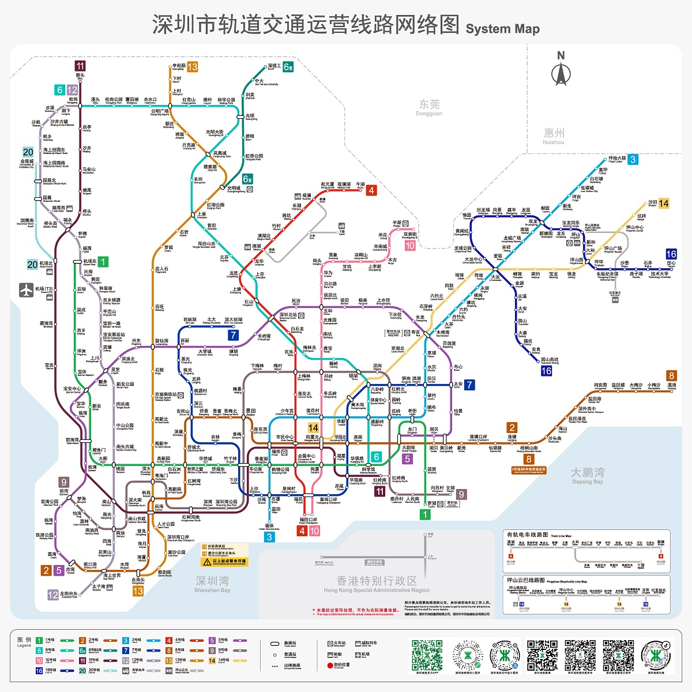

我的工作台
⚙️
早上好，今天也要加油
♋ 巨蟹座
⏳
--
天气加载中…
湿度 -- · -- 风
📍 定位中
未来五天 ›
打卡
记录跑步和骑行，保持自己的节奏。
查 询
清 除
默认可滑动页面
开启地图操作
互动线路图 · 查询后自动高亮路线
＋
－
⌂ 居中
16 线 / 317 站 · 开启地图操作后可缩放、拖动
官方线网图

＋
－
⌂ 居中
来源：深圳市交通运输局官网
0
本周分钟
0
本月次数
0
连续天数
0
累计分钟
个人学术主页
你的研究、成果与个人介绍。
完整打开 ↗
✦
ChatGPT
写作、学习、讨论，随时开始新的对话。
打开 ChatGPT 网页版 ↗
在官方网页中登录你的账号。此工作台不读取账号或聊天内容。
🏠
首页
🚇
出行
👤
个人主页
✦
ChatGPT